This library provides input/output blocks where every block is available in a continuous and a discrete (sampled) representation. A block is defined via its continuous parameterization. By specifying a discretization method and a sample time, the discrete representation is automatically derived from the continuous form. The defaults of the most important options for all blocks are set in the global SampleClock component (via inner/outer). As a result, it is, e.g., easy to switch quickly between a continuous and a discrete representation of all blocks of a controller.
Examples to demonstrate the technique are given in sublibrary Examples. Especially, the continuous or discrete control of a simple flexible drive with a P-PI cascade controller is demonstrated in example SimpleControlledDrive.
Extends from Modelica.Icons.Library (Icon for library).
| Name | Description |
|---|---|
| Users Guide | |
| Demonstrate the usage of package Controller | |
| Global options for blocks of Controller library (in particular sample clock) | |
| Sample the input signal if discrete block or y=u if continuous block | |
| Continuous or discrete state space system block | |
| 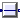 TransferFunction | Continuous or discrete, single input single output transfer function |
| 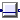 ZerosAndPoles | Continuous or discretized, single input single output block described by a ZerosAndPoles object |
| 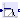 Filter | Continuous or discretized analog low or high pass IIR-filter (CriticalDamping/Bessel/Butterworth/Chebyshev) |
| 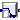 FilterFIR | Discrete finite impulse response low or high pass filter |
| Output the integral of the input signal (continuous or discrete block) | |
| 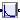 Derivative | Approximate derivative (continuous or discrete block) |
| First order (continuous or discrete) transfer function block (= 1 pole) | |
| 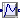 SecondOrder | Second order (continuous or discrete) transfer function block (= 2 poles) |
| 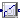 PI | Proportional-Integral controller (continuous or discrete block) |
| 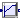 PID | PID-controller in additive description form |
| P, PI, PD, and PID controller with limited output, anti-windup compensation and setpoint weighting | |
| 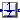 UnitDelay | Delay the input by a multiple of the base sample time if discrete block or y=u if continuous block |
| Analog to digital converter (including sampler) | |
| 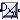 DAconverter | Digital to analog converter (including zero order hold) |
| 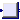 MatrixGain | Output the product of a gain matrix with the input signal vector. The matrix can be loaded from a file optionally |
| 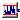 Noise | Block that generates a uniform distributed noise output signal at sample instants if discrete and y=0 if continuous |
| Interfaces (partial blocks) of Controller library | |
| Templates of control structures | |
| Constants and types with choices, especially to build menus | |
| DataDir=Modelica_LinearSystems2.DataDir | Absolute path to directory containing utilitiy files for this package, such as images |
Global block that defines options for all components of the Controller library that are on the same or on a lower level as the sampleClock component. In particular it is defined whether the blocks shall be used by default in a continuous or a discrete representation. In the latter case, the default discretization method and the base sample time is defined. The sample time of a block is an integer multiple of the base sample time defined in the SampleClock component.
| Name | Description |
|---|---|
| blockType | Type of Sampled blocks (Continuous or Discrete) |
| methodType | Discretization method for discrete blocks |
| sampleTime | Base sample time for discrete blocks [s] |
| initType | Type of initialization of Sampled blocks |
If discrete block, the output y is sampled according to sample time sampleClock.sampleTime * sampleFactor, where sampleClock.sampleTime is defined globally in the outer component sampleClock and sampleFactor is an Integer parameter of component Sampler.
If continuous block, the output y is identical to the input u.
Extends from Interfaces.PartialSISO_equality (Partial Single Input Single Output (continuous or discrete) control block of Controller library where usually y=u if continuous block).
| Name | Description |
|---|---|
| blockType | Type of block (Continuous/Discrete) |
| sampleFactor | Ts=sampleClock.sampleTime*sampleFactor |
| Name | Description |
|---|---|
| u | Continuous or discrete input signal of block |
| y | Continuous or discrete output signal of block |
Extends from Interfaces.PartialSampledBlock (Partial block of Sampled library (icon + default parameters)).
| Name | Description |
|---|---|
| system | Continuous linear time-invariant system |
| Advanced options | |
| blockType | Type of block (Continuous/Discrete) |
| methodType | Type of discretization if discrete block |
| sampleFactor | Ts=sampleClock.sampleTime*sampleFactor |
| initType | Type of initialization (no init/initial/steady state/output) |
| x_start[nx] | Initial or guess values of states |
| y_start[ny] | Initial values of outputs (remaining states are in steady state if possible) |
| Name | Description |
|---|---|
| u[size(system.B, 2)] | Continuous or discrete input signals of block |
| y[size(system.C, 1)] | Continuous or discrete output signals of block |
| x[nx] | State vector of continuous system |
Extends from Modelica_LinearSystems2.Controller.Interfaces.PartialSISO2 (Partial Single Input Single Output (continuous or discrete) control block of Controller library).
| Name | Description |
|---|---|
| system | Transfer function |
| Advanced options | |
| blockType | Type of block (Continuous/Discrete) |
| methodType | Type of discretization if discrete block |
| sampleFactor | Ts=sampleClock.sampleTime*sampleFactor |
| initType | Type of initialization (no init/initial/steady state/output) |
| x_start[nx] | Initial or guess values of states |
| y_start | Initial value of output (derivatives of y are zero upto nx-1-th derivative) |
| Name | Description |
|---|---|
| u | Continuous or discrete input signal of block |
| y | Continuous or discrete output signal of block |
| x[nx] | State of continuous transfer function |
This function transforms a zeros-poles-gain system representation into state space representation. To achieve well numerical condition the ZerosAndPoles transfer function is transformed into state space form by creating first and second order blocks that are connected together in series. Every block is represented in controller canonical form and scaled such that the gain from the input of this block to its output is one (i.e. y(s=0) = u(s=0)), if this is possible. Details are given below.
The ZerosAndPoles transfer function is defined as:
product(s + n1[i]) * product(s^2 + n2[i,1]*s + n2[i,2])
y = k*--------------------------------------------------------- * u
product(s + d1[i]) * product(s^2 + d2[i,1]*s + d2[i,2])
This is treated as a series connection of first and second order systems. If size(n1) == size(d1) and size(n2) == size(d2) this gives the following sequence of operations:
s^2 + n2[1,1]*s + n2[1,2]
y_1 = ------------------------- * u
s^2 + d2[1,1]*s + d2[1,2]
s^2 + n2[2,1]*s + n2[2,2]
y_2 = ------------------------- * y_1
s^2 + d2[2,1]*s + d2[2,2]
...
s + n1[..]
y_n = ---------- * y_(n-1)
s + d1[..]
y = k*y_n
Based on this representation, evrey block with transfer function G(s) could be transformed into
G(s) = k * F(s)
with F(s) has unit gain. This leads to representations of the forms
a2 + a1*s + s^2 a2 b2 + a1*b2/a2*s + b2/a2*s^2
G(s) = -------------------- = ---- * ------------------------------ = k * F(s), k = a2/b2 (1)
b2 + b1*s + s^2 b2 b2 + b1*s + s^2
for second order systems and
a + s a b + b/a*s
G(s) = -------- = --- * ---------- = k * F(s), k = a/b
b + s b b + s
for first order systems respectively.
The complete system is now considered as the series connections of all the single unit gain transfer functions and an overall gain k with
k = product(ki).
In the general case, the following system structures and the corresponding state space systems can appear (note, 'c' is the reciprocal local gain 1/k):
(1)
a2 + a1*s + s^2 der(x1) = x2
y = --------------------- --> der(x2) = -b2*x1 - b1*x2 + b2*u
b2 + b1*s + s^2 y = c*((a2-b2)*x1 + (a1-b1)*x2 + u), c = b2/a2
(2)
s + a der(x1) = x2
y = ---------------- * u --> der(x2) = -b2*x1 - b1*x2 + b2*u
b2 + b1*s + s^2 y = k*(a1/b2*x1 +x2/b2), c = b2/a
(3)
1 der(x1) = x2
y = --------------- *u --> der(x2) = -b2*x1 - b1*x2 + b2*u
b2 + b1*s + s^2 y = c*x1/b2, c = b2
(4)
a + s der(x) = -b*x + b*u
y = ----- * u --> y = c*((a-b)/b*x + u), c = b/a
b + s
(5)
1
y = ----- * u --> der(x) = -b*x + b*u
b + s y = x, c = b
If the sizes of the numerator and denominator polynomials do not match, the small systems are built in the following way:
(1) Build systems of form (1) by combining
- 1 d2 and 1 n2
(= 1 second order denominator and 1 second order numerator) or
- 1 d2 and 2 n1 or
- 2 d1 and 1 n2
(2) Build at most one system of form (2) by combining
- 1 d2 and 1 n2
(3) Build systems of form (3) by
- 1 d2
(4) Build systems of form (4) by combining
- 1 d1 and 1 n1
(5) Build systems of form (5) by
- 1 d1
The numeric properties of the resulting state space system depends on which first and second order polynomials are combined and connected together. From a numerical point of view, it would therefore be useful to combine the polynomials based on the numeric values of the polynomial coefficients, (e.g., in a first step the polynomials could be sorted according to their cut-off frequency).
However, this has the disadvantage that the structure of the resulting state space system depends on the numeric values of the polynomial coefficients. Since Modelica environments perform symbolic pre-processing on equations, this would mean that a change of a polynomial coefficient requires to newly compile the state space system.
If, on the other hand, the structure of the state space system depends only on dimension information of the n1,n2,d1,d2 arrays, then the polynomial coefficients can be changed without a new translation of the model. This is the major reason why the structure of the state space system in the implementation of this block is based only on dimension information.
This is, e.g., not critical for the provided filters: The dimension of the n1,n2,d1,d2 arrays depend for filters only on the filter characteristics (Bessel, Butterworth etc.), the filter type (low pass, high pass etc.) and on the filter order. If any of this data is changed, the model has to be newly compiled. All the other filter data, such as cut-off frequency or ripple amplitude, can be changed without re-compilation of the model. The ZerosAndPoles transfer function is now constructed for the filters in such a way that the filter zeros and poles are appropriately sorted to give better numerical properties.
Another alternative implementation of the state space system would be to use the function controller canonical form that directly results from the transfer function. The severe disadvantage of this approach is that the structure of the state space system from above is lost for the symbolic preprocessing. If, e.g., index reduction has to be applied (e.g. since a filter is used to realize a non-linear inverse model), then the tool cannot perform the index reduction. Example:
Assume, a generic first order state space system is present
der(x) = a*x + b*u
y = c*x + d*u
and the values of the scalars a,b,c,d are parameters that might be changed before the simulation starts. If y has to be differentiated symbolically during code generation, then
der(y) = c*der(x) + d*der(u)
der(x) = a*x + b*u
As a result, u needs to be differentiated too, and this might not be possible and therefore translation might fail.
On the other hand, if the first order system is defined to be a low pass filter and the state space system is generated by keeping this structure, we have (see form (5) above):
der(x) = -b*x + u
y = x
Differentiating y symbolically leads to:
der(y) = der(x)
der(x) = -b*x + u
Therefore, in this case, the derivative of u is not needed and the tool can continue with the symbolic processing.
Extends from Modelica_LinearSystems2.Controller.Interfaces.PartialSISO2 (Partial Single Input Single Output (continuous or discrete) control block of Controller library).
| Name | Description |
|---|---|
| system | Data defining the ZerosAndPoles object |
| Advanced options | |
| blockType | Type of block (Continuous/Discrete) |
| methodType | Type of discretization if discrete block |
| sampleFactor | Ts=sampleClock.sampleTime*sampleFactor |
| initType | Type of initialization (no init/initial/steady state/output) |
| x_start[nx] | Initial or guess values of states |
| y_start | Initial or guess values of output |
| Name | Description |
|---|---|
| u | Continuous or discrete input signal of block |
| y | Continuous or discrete output signal of block |
| x[nx] | State of continuous block |
This block has to be improved for discrete mode. At present, this function seems not to be reliable. Please use "criticalDamping instead
Extends from ZerosAndPoles (Continuous or discretized, single input single output block described by a ZerosAndPoles object).
| Name | Description |
|---|---|
| system | Data defining the ZerosAndPoles object |
| analogFilter | Analog filter characteristics (CriticalDamping/Bessel/Butterworth/Chebyshev) |
| filterType | Type of filter (LowPass/HighPass) |
| order | Order of filter |
| f_cut | Cut-off frequency [Hz] |
| gain | Gain (= amplitude of frequency response at zero frequency) |
| normalized | = true, if amplitude of low pass filter at f_cut is 1/sqrt(2) (=3db) |
| A_ripple | Pass band ripple for Chebyshev filter (otherwise not used) [dB] |
| Advanced options | |
| blockType | Type of block (Continuous/Discrete) |
| methodType | Type of discretization if discrete block |
| sampleFactor | Ts=sampleClock.sampleTime*sampleFactor |
| initType | Type of initialization (no init/initial/steady state/output) |
| x_start[nx] | Initial or guess values of states |
| y_start | Initial or guess values of output |
| Name | Description |
|---|---|
| u | Continuous or discrete input signal of block |
| y | Continuous or discrete output signal of block |
| x[nx] | State of continuous block |
| Name | Description |
|---|---|
| blockType | Type of block (Continuous/Discrete) |
| sampleFactor | Ts=sampleClock.sampleTime*sampleFactor |
| specType | Specification type of FIR filter |
| L | Length of mean value filter |
| filterType | Type of filter |
| order | Order of filter |
| f_cut | Cut-off frequency [Hz] |
| window | Type of window |
| beta | Beta-Parameter for Kaiser-window |
| a[:] | FIR filter coefficients |
| Name | Description |
|---|---|
| u | Continuous or discrete input signal of block |
| y | Continuous or discrete output signal of block |
This blocks defines the transfer function between the input u and the output y as integrator:
k
y = --- * u
s
The block can be continuous or discrete (with continuous parameterization).
It is not possible to initalize a continuous integrator in steady state. For this reason, option "initType = SteadyState" is ignored for a continuous integrator block and interpreted as "initType = InitialState".
Extends from Interfaces.PartialSISO2 (Partial Single Input Single Output (continuous or discrete) control block of Controller library).
| Name | Description |
|---|---|
| k | Integrator gain |
| withDelay | |
| Advanced options | |
| blockType | Type of block (Continuous/Discrete) |
| methodType | Type of discretization if discrete block |
| sampleFactor | Ts=sampleClock.sampleTime*sampleFactor |
| initType | Type of initialization (no init/initial/steady state/output) |
| y_start | Initial or guess value of output (=state) |
| Name | Description |
|---|---|
| u | Continuous or discrete input signal of block |
This blocks defines the transfer function between the input u and the output y as approximative derivative (DT1):
k * s
y = ------------ * u
T * s + 1
The block can be continuous or discrete (with continuous parameterization).
If k=0, the state space realization of the block is specially constructed, in order that the D-part of PID controllers can be set to zero without introducing numerical problems.
If you would like to be able to change easily between different
transfer functions (FirstOrder, SecondOrder, ... ) by changing
parameters, use the general model class TransferFunction
instead and model a DT1 system with parameters
n = {k,0}, d = {T,1}.
Extends from Interfaces.PartialSISO2 (Partial Single Input Single Output (continuous or discrete) control block of Controller library).
| Name | Description |
|---|---|
| k | Gain |
| T | Time Constant (T>0 required; T=0 is ideal derivative block) [s] |
| Advanced options | |
| blockType | Type of block (Continuous/Discrete) |
| methodType | Type of discretization if discrete block |
| sampleFactor | Ts=sampleClock.sampleTime*sampleFactor |
| initType | Type of initialization (no init/initial/steady state/output) |
| x_start | Initial or guess value of state |
| y_start | Initial or guess value of output |
| Name | Description |
|---|---|
| u | Continuous or discrete input signal of block |
| y | Continuous or discrete output signal of block |
| x | State of approximative derivative |
This blocks defines the transfer function between the input u and the output y as first order system:
k
y = --------- * u
T * s + 1
The block can be continuous or discrete (with continuous parameterization).
Extends from Interfaces.PartialSISO2 (Partial Single Input Single Output (continuous or discrete) control block of Controller library).
| Name | Description |
|---|---|
| k | Gain |
| T | Time Constant |
| Advanced options | |
| blockType | Type of block (Continuous/Discrete) |
| methodType | Type of discretization if discrete block |
| sampleFactor | Ts=sampleClock.sampleTime*sampleFactor |
| initType | Type of initialization (no init/initial/steady state/output) |
| y_start | Initial y if initType=InitialState (else guess) |
| Name | Description |
|---|---|
| u | Continuous or discrete input signal of block |
This blocks defines the transfer function between the input u and the output y as second order system:
k
y = --------------------------------- * u
( s / w )^2 + 2*D*( s / w ) + 1
The block can be continuous or discrete (with continuous parameterization).
If you would like to be able to change easily between different
transfer functions (FirstOrder, SecondOrder, ... ) by changing
parameters, use the general model class TransferFunction
instead and model a second order SISO system with parameters
n = {k}, d = {1/w^2, 2*D/w, 1}.
Example:
parameter: k = 0.3, w = 0.5, D = 0.4
results in:
0.3
y = ------------------- * u
4.0 s^2 + 1.6 s + 1
Extends from Interfaces.PartialSISO2 (Partial Single Input Single Output (continuous or discrete) control block of Controller library).
| Name | Description |
|---|---|
| k | Gain |
| w | Angular frequency |
| D | Damping |
| Advanced options | |
| blockType | Type of block (Continuous/Discrete) |
| methodType | Type of discretization if discrete block |
| sampleFactor | Ts=sampleClock.sampleTime*sampleFactor |
| initType | Type of initialization (no init/initial/steady state/output) |
| y_start | Initial or guess value of output (= state) |
| yd_start | Initial or guess value of derivative of output (= state) |
| Name | Description |
|---|---|
| u | Continuous or discrete input signal of block |
| yd | First derivative of y |
| yy[2] |
This blocks defines the transfer function between the input u and the output y as integrator:
1
y = k * (1 + ------ ) * u
T*s
T*s + 1
= k * --------- * u
T*s
The block can be continuous or discrete (with continuous parameterization).
It is not possible to initalize a continuous integrator in steady state. For this reason, option "initType = SteadyState" is ignored for a continuous PI block and interpreted as "initType = InitialState".
Extends from Interfaces.PartialSISO2 (Partial Single Input Single Output (continuous or discrete) control block of Controller library).
| Name | Description |
|---|---|
| k | Gain |
| T | Time Constant (T>0 required) [s] |
| Advanced options | |
| blockType | Type of block (Continuous/Discrete) |
| methodType | Type of discretization if discrete block |
| sampleFactor | Ts=sampleClock.sampleTime*sampleFactor |
| initType | Type of initialization (no init/initial/steady state/output) |
| x_start | Initial or guess value of state |
| y_start | Initial value of output |
| Name | Description |
|---|---|
| u | Continuous or discrete input signal of block |
| y | Continuous or discrete output signal of block |
| x | State of block |
This is the text-book version of a PID-controller. For a more practically useful PID-controller, use block LimPID.
The PID block can be initialized in different ways controlled by parameter initType. The possible values of initType are defined in Modelica.Blocks.Types.InitPID. This type is identical to Types.Init, with the only exception that the additional option DoNotUse_InitialIntegratorState is added for backward compatibility reasons (= integrator is initialized with InitialState whereas differential part is initialized with NoInit which was the initialization in version 2.2 of the Modelica standard library).
Based on the setting of initType, the integrator (I) and derivative (D) blocks inside the PID controller are initialized according to the following table:
| initType | I.initType | D.initType |
| NoInit | NoInit | NoInit |
| SteadyState | SteadyState | SteadyState |
| InitialState | InitialState | InitialState |
| InitialOutput and initial equation: y = y_start |
NoInit | SteadyState |
| DoNotUse_InitialIntegratorState | InitialState | NoInit |
In many cases, the most useful initial condition is SteadyState because initial transients are then no longer present. If initType = InitPID.SteadyState, then in some cases difficulties might occur. The reason is the equation of the integrator:
der(y) = k*u;
The steady state equation "der(x)=0" leads to the condition that the input u to the integrator is zero. If the input u is already (directly or indirectly) defined by another initial condition, then the initialization problem is singular (has none or infinitely many solutions). This situation occurs often for mechanical systems, where, e.g., u = desiredSpeed - measuredSpeed and since speed is both a state and a derivative, it is natural to initialize it with zero. As sketched this is, however, not possible. The solution is to not initialize u or the variable that is used to compute u by an algebraic equation.
Extends from Interfaces.PartialSampledBlock (Partial block of Sampled library (icon + default parameters)).
| Name | Description |
|---|---|
| pidRep | type of PID representation: k*(1 + 1/Ti/s + Td*s) or (kp + Ti/s + Td*s) |
| k | Gain of controller |
| Ti | Time constant of Integrator block [s] |
| Td | Time constant of Derivative block [s] |
| Nd | The higher Nd, the more ideal the derivative block |
| kp | P part parameter of gain representation |
| ki | I part parameter of gain representation |
| kd | D part parameter of gain representation |
| Initialization | |
| xi_start | Initial or guess value value for integrator output (= integrator state) |
| xd_start | Initial or guess value for state of derivative block |
| y_start | Initial value of output |
| Advanced options | |
| blockType | Type of block (Continuous/Discrete) |
| methodType | Type of discretization if discrete block |
| sampleFactor | Ts=sampleClock.sampleTime*sampleFactor |
| initType | Type of initialization (no init/initial/steady state/output) |
| Name | Description |
|---|---|
| u | Continuous or discrete input signal of block |
| y | Continuous or discrete output signal of block |
Via parameter controllerType either P, PI, PD, or PID can be selected. If, e.g., PI is selected, all components belonging to the D-part are removed from the block (via conditional declarations). The example model Modelica.Blocks.Examples.PID_Controller demonstrates the usage of this controller. Several practical aspects of PID controller design are incorporated according to chapter 3 of the book:
Besides the additive proportional, integral and derivative part of this controller, the following features are present:
The parameters of the controller can be manually adjusted by performing simulations of the closed loop system (= controller + plant connected together) and using the following strategy:
Initialization
This block can be initialized in different ways controlled by parameter initType. The possible values of initType are defined in Modelica.Blocks.Types.InitPID. This type is identical to Types.Init, with the only exception that the additional option DoNotUse_InitialIntegratorState is added for backward compatibility reasons (= integrator is initialized with InitialState whereas differential part is initialized with NoInit which was the initialization in version 2.2 of the Modelica standard library).
Based on the setting of initType, the integrator (I) and derivative (D) blocks inside the PID controller are initialized according to the following table:
| initType | I.initType | D.initType |
| NoInit | NoInit | NoInit |
| SteadyState | SteadyState | SteadyState |
| InitialState | InitialState | InitialState |
| InitialOutput and initial equation: y = y_start |
NoInit | SteadyState |
| DoNotUse_InitialIntegratorState | InitialState | NoInit |
In many cases, the most useful initial condition is SteadyState because initial transients are then no longer present. If initType = InitPID.SteadyState, then in some cases difficulties might occur. The reason is the equation of the integrator:
der(y) = k*u;
The steady state equation "der(x)=0" leads to the condition that the input u to the integrator is zero. If the input u is already (directly or indirectly) defined by another initial condition, then the initialization problem is singular (has none or infinitely many solutions). This situation occurs often for mechanical systems, where, e.g., u = desiredSpeed - measuredSpeed and since speed is both a state and a derivative, it is natural to initialize it with zero. As sketched this is, however, not possible. The solution is to not initialize u_m or the variable that is used to compute u_m by an algebraic equation.
If parameter limitAtInit = false, the limits at the output of this controller block are removed from the initialization problem which leads to a much simpler equation system. After initialization has been performed, it is checked via an assert whether the output is in the defined limits. For backward compatibility reasons limitAtInit = true. In most cases it is best to use limitAtInit = false.
Extends from Interfaces.PartialSampledBlock (Partial block of Sampled library (icon + default parameters)), Modelica.Blocks.Interfaces.SVcontrol (Single-Variable continuous controller), Interfaces.PartialBlockIcon (Basic graphical layout of discrete/continuous block).
| Name | Description |
|---|---|
| pidRepresentation | type of PID representation: k*(1 + 1/Ti/s + Td*s) or (kp + Ti/s + Td*s) |
| controllerType | Type of controller |
| k | Gain of controller |
| Ti | Time constant of Integrator block [s] |
| Td | Time constant of Derivative block [s] |
| kp | P part parameter of gain representation |
| ki | I part parameter of gain representation |
| kd | D part parameter of gain representation |
| yMax | Upper limit of output |
| yMin | Lower limit of output |
| wp | Set-point weight for Proportional block (0..1) |
| wd | Set-point weight for Derivative block (0..1) |
| Ni | Ni*Ti is time constant of anti-windup compensation |
| Nd | The higher Nd, the more ideal the derivative block |
| Initialization | |
| limitsAtInit | = false, if limits are ignored during initializiation |
| xi_start | Initial or guess value value for integrator output (= integrator state) |
| xd_start | Initial or guess value for state of derivative block |
| y_start | Initial value of output |
| Advanced options | |
| blockType | Type of block (Continuous/Discrete) |
| methodType | Type of discretization if discrete block |
| sampleFactor | Ts=sampleClock.sampleTime*sampleFactor |
| initType | Type of initialization (no init/initial/steady state/output) |
| Name | Description |
|---|---|
| u_s | Connector of setpoint input signal |
| u_m | Connector of measurement input signal |
| y | Connector of actuator output signal |
If discrete block, the output y is sampled and is the value of the sampled input signal u at the previous sample instant, where sample time = sampleClock.sampleTime * sampleFactor and sampleClock.sampleTime is defined globally in the outer component sampleClock and sampleFactor is an Integer parameter of component UnitDelay.
If continuous block, the output y is identical to the input u.
Extends from Interfaces.PartialSISO_equality (Partial Single Input Single Output (continuous or discrete) control block of Controller library where usually y=u if continuous block).
| Name | Description |
|---|---|
| blockType | Type of block (Continuous/Discrete) |
| sampleFactor | Ts=sampleClock.sampleTime*sampleFactor |
| Name | Description |
|---|---|
| u | Continuous or discrete input signal of block |
| y | Continuous or discrete output signal of block |
If discrete block, the output y is sampled according to sample time sampleClock.sampleTime * sampleFactor, where sampleClock.sampleTime is defined globally in the outer component sampleClock and sampleFactor is an Integer parameter of component Sampler.
The sampled output signal is computed by limiting the input u with the provided y_min and y_max borders and by rounding according to the provided precision of the AD converter defined via parameter bits (e.g. bits = 12 is the precision of simple AD converters).
If continuous block, the output y is identical to the input u, but is limited by y_min and y_max.
Extends from Interfaces.PartialSISO_equality (Partial Single Input Single Output (continuous or discrete) control block of Controller library where usually y=u if continuous block).
| Name | Description |
|---|---|
| y_max | Upper limit of output signal |
| y_min | Lower limit of output signal |
| bits | Number of bits (=0 means no quantization error) |
| blockType | Type of block (Continuous/Discrete) |
| sampleFactor | Ts=sampleClock.sampleTime*sampleFactor |
| Name | Description |
|---|---|
| u | Continuous or discrete input signal of block |
| y | Continuous or discrete output signal of block |
| Name | Description |
|---|---|
| y_max | Upper limit of output signal |
| y_min | Lower limit of output signal |
| bits | Number of bits (=0 means no quantization error) |
| unitDelay | = true, if one sample period delay, = false, if computing time not modelled |
| blockType | Type of block (Continuous/Discrete) |
| sampleFactor | Ts=sampleClock.sampleTime*sampleFactor |
| Name | Description |
|---|---|
| u | Continuous or discrete input signal of block |
| y | Continuous or discrete output signal of block |
This block is similar to Modelica.Blocks.Math.MatrixGain. Additionally this block offers to load the matrix from a MATLAB-file. It computes output vector y as product of the gain matrix K with the input signal vector u:
y = K * u;
Example:
parameter: K = [0.12 2; 3 1.5]
results in the following equations:
| y[1] | | 0.12 2.00 | | u[1] |
| | = | | * | |
| y[2] | | 3.00 1.50 | | u[2] |
Extends from Modelica.Blocks.Interfaces.MIMO (Multiple Input Multiple Output continuous control block), Interfaces.PartialBlockIcon (Basic graphical layout of discrete/continuous block).
| Name | Description |
|---|---|
| nin | Number of inputs |
| nout | Number of outputs |
| matrixOnFile | true if matrix should be read from file |
| fileName | |
| matrixName | Name of the matrix |
| K[:, :] | Matrix gain |
| Name | Description |
|---|---|
| u[nin] | Connector of Real input signals |
| y[nout] | Connector of Real output signals |
If discrete block, the output y is sampled according to sample time sampleClock.sampleTime * sampleFactor, where sampleClock.sampleTime is defined globally in the outer component sampleClock and sampleFactor is an Integer parameter of component Noise. At every sample time, a random output signal y in the range y_min .. y_max is generated, where y_min and y_max are parameters. A typical noise signal is shown in the next figure:

The Integer[3] parameter vector firstSeed is used to initialize the basic random number generator. The 3 elements of firstSeed need to be in the range [0, 255]. The use of the same seed vector will lead to the same sequence of numbers when these are computed serially. This is usually not desired. Therefore, for every usage of block Noise a different firstSeed should be defined.
If continuous block, the output y = 0.0, i.e., no noise signal
is generated. The reason is that the noise can only reasonably be
used in a simulation if it is a discrete signal, i.e., changes
its value only at sample instants. Since a continous block is usually
used to speed up the simulation, the noise should also be turned
off because it will otherwise significantly limit the
maximum step size of the integrator.
This noise generator is based on a function that generates a random real number uniformely in the semi-open range [0.0, 1.0). The function uses the standard Wichmann-Hill generator, combining three pure multiplicative congruential generators of modulus 30269, 30307 and 30323. Its period (how many numbers it generates before repeating the sequence exactly) is 6,953,607,871,644. While of much higher quality than the rand() function supplied by most C libraries, the theoretical properties are much the same as for a single linear congruential generator of large modulus.
Extends from Interfaces.PartialBlockIcon (Basic graphical layout of discrete/continuous block).
| Name | Description |
|---|---|
| y_min | Lower limit of noise band |
| y_max | Upper limit of noise band |
| firstSeed[3] | Integer[3] defining random sequence; required element range: 0..255 |
| blockType | Type of block (Continuous/Discrete) |
| sampleFactor | Ts=sampleClock.sampleTime*sampleFactor |
| Name | Description |
|---|---|
| y | Discrete output signal of block |